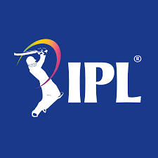

Indian Premier League

There are many Cricket leauges in the world. Every country has its own league.
Indian Premier League |
|
|  | IPL is a T20 league which means 20 overs in which the first six overs are powerplay meaning that there are only two fielders outside the 30 yard circle. This league is played in india over 2 months period. It takes place all over the country in the months April and May. It was a 8 franchise league till 2021. In 2022 in the mega auction two new franchises were added. IPL is a round robin which means each team plays each other the same number of times in this case twice. Every team plays the equal amount of home and away games. |
| The Hundred is a 100 ball match played in England and Wales. The bowlers end changes after 10 balls. Every bowler can bowl a maximunm of 10 balls at a stretch from one end. This is decided by the captain. There is a timeout of 2 minutes which can be taken by the bowling side. The coaches can come on the ground and discuss tactics with the players in mid-match. The poweplay is 25 balls long and one match lasts 2 hours 30 minutes. | |
|
| BBl is short form of Big Bash League. It is played in Australian and equivalent to the Indian Premier League where the best city franchises across the country compete against each other. These franchises comes for the BBL trophy. The playoffs process is a bit different from the IPL. In the Big Bash top 5 team qualify for playoff instead of top 4 where 4 vs 5. Loser of that games goes home while the winner stays in the tournament. |